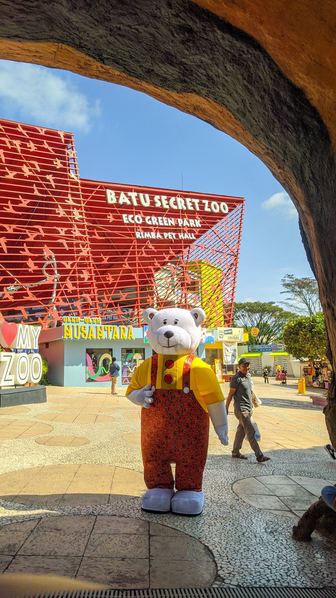
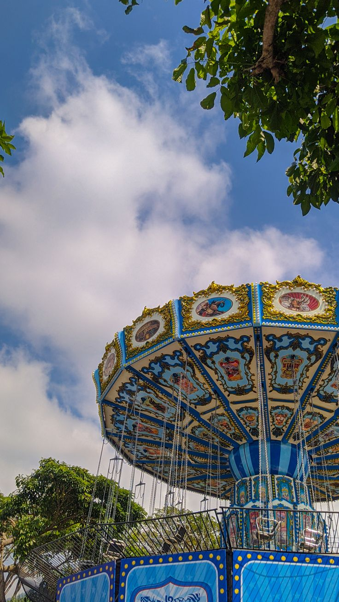
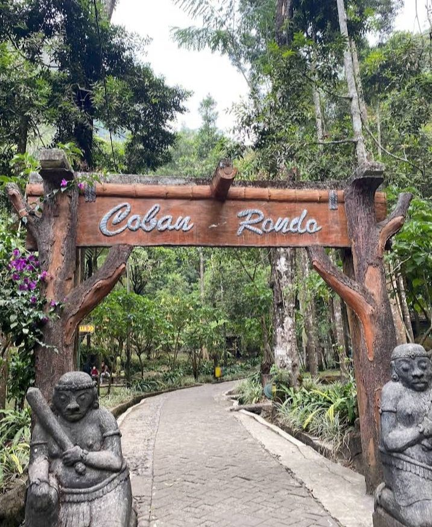

Selamat datang di Kota Wisata Batu
Kota Wisata Batu adalah sebuah kota yang terletak di Jawa Timur, terkenal dengan udara sejuk dan berbagai objek wisata alam yang menarik.
Tentang Kota Wisata Batu
Kota Wisata Batu menawarkan keindahan alam, mulai dari kebun apel, air terjun, hingga pemandangan gunung yang memukau. Batu menjadi tujuan wisata keluarga dan petualang yang tak terlupakan.
Wisata di Kota Batu
Batu memiliki berbagai tempat wisata menarik, seperti Batu Secret Zoo, Jatim Park, dan Air Terjun Coban Rondo. Setiap destinasi memberikan pengalaman unik yang memikat pengunjung.



Kontak Kami
Untuk informasi lebih lanjut, hubungi kami di email: info@wisatabatu.com